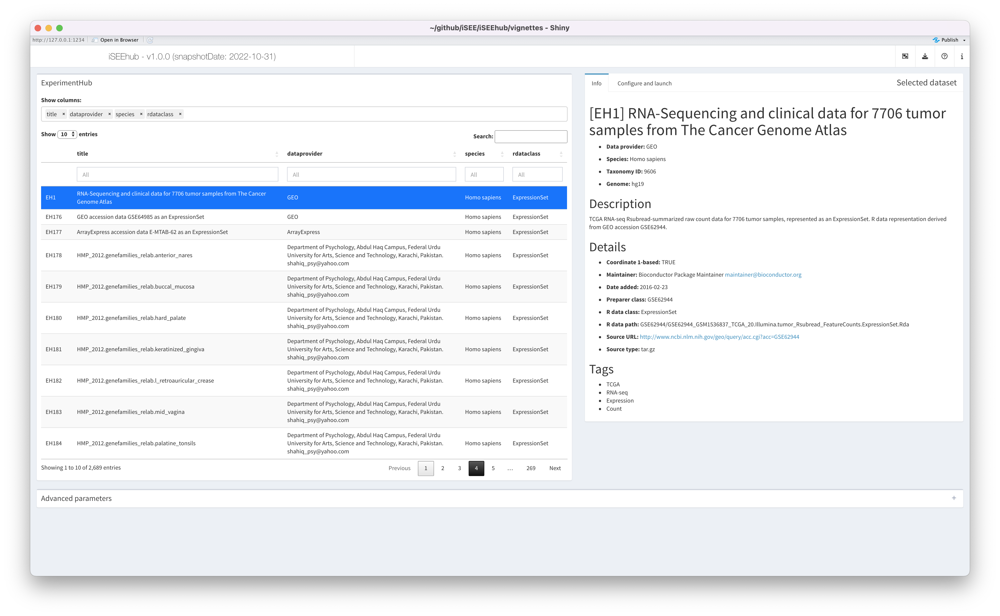
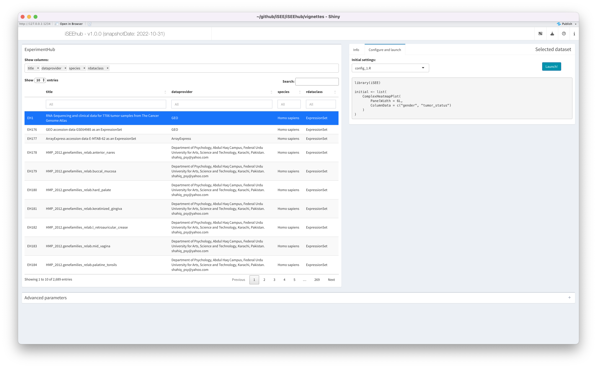

Introduction to iSEEhub
Kevin Rue-Albrecht
University of Oxfordkevin.rue-albrecht@imm.ox.ac.uk
13 September 2022
Source:vignettes/iSEEhub.Rmd
iSEEhub.RmdBasics
Install iSEEhub
R is an open-source statistical environment which can be easily modified to enhance its functionality via packages. iSEEhub is a R package available via the Bioconductor repository for packages. R can be installed on any operating system from CRAN after which you can install iSEEhub by using the following commands in your R session:
if (!requireNamespace("BiocManager", quietly = TRUE)) {
install.packages("BiocManager")
}
BiocManager::install("iSEEhub")
## Check that you have a valid Bioconductor installation
BiocManager::valid()Required knowledge
iSEEhub is based on many other packages that have implemented the infrastructure needed for dealing with omics data and interactive visualisation. That is, packages like SummarizedExperiment, SingleCellExperiment, iSEE and shiny.
If you are asking yourself the question “Where do I start using Bioconductor?” you might be interested in this blog post.
Asking for help
As package developers, we try to explain clearly how to use our
packages and in which order to use the functions. But R and
Bioconductor have a steep learning curve so it is critical to
learn where to ask for help. The blog post quoted above mentions some
but we would like to highlight the Bioconductor support site
as the main resource for getting help: remember to use the
iSEEhub tag and check the older posts.
Other alternatives are available such as creating GitHub issues and
tweeting. However, please note that if you want to receive help you
should adhere to the posting
guidelines. It is particularly critical that you provide a small
reproducible example and your session information so package developers
can track down the source of the error.
Citing iSEEhub
We hope that iSEEhub will be useful for your research. Please use the following information to cite the package and the overall approach. Thank you!
## Citation info
citation("iSEEhub")
#>
#> To cite package 'iSEEhub' in publications use:
#>
#> kevinrue (2022). _Demonstration of a Bioconductor Package_.
#> doi:10.18129/B9.bioc.iSEEExperimentHub
#> <https://doi.org/10.18129/B9.bioc.iSEEExperimentHub>,
#> https://github.com/iSEE/iSEEhub/iSEEExperimentHub - R package version
#> 0.99.2, <http://www.bioconductor.org/packages/iSEEhub>.
#>
#> kevinrue (2022). "Demonstration of a Bioconductor Package."
#> _bioRxiv_. doi:10.1101/TODO <https://doi.org/10.1101/TODO>,
#> <https://www.biorxiv.org/content/10.1101/TODO>.
#>
#> To see these entries in BibTeX format, use 'print(<citation>,
#> bibtex=TRUE)', 'toBibtex(.)', or set
#> 'options(citation.bibtex.max=999)'.Here is an example of you can cite your package inside the vignette:
- iSEEhub (kevinrue, 2022)
Quick start to using to iSEEhub
The main functionality of the package is available through the
function iSEEhub().
The function returns a shiny app
that can then be launched using the function
shiny::runApp().
library(iSEEhub)
#> Warning: multiple methods tables found for 'aperm'
#> Warning: replacing previous import 'BiocGenerics::aperm' by
#> 'DelayedArray::aperm' when loading 'SummarizedExperiment'
library(ExperimentHub)
ehub <- ExperimentHub()
app <- iSEEhub(ehub)
if (interactive()) {
shiny::runApp(app, port = 1234)
}
The ExperimentHub pane
Datasets available in the Bioconductor ExperimentHub are listed – along with metadata – in the interactive table on the left.
The table may be filtered and sorted using any metadata column, to efficiently browse the datasets available.
By default, only a subset of metadata columns are displayed. The
selectize input labelled Show columns: at the top of the
pane may be used to add, remove, or reorder columns in the table.
No more than one dataset may be selected at any time.
The Selected Dataset pane
Overview
The pane on the right updates with the currently selected dataset.
This pane contains information and inputs required to load the currently selected dataset in the main iSEE app.
The pane is composed of two tabs described in the following sections.
The Info tab
The Info tab displays the full metadata associated with
the currently selected dataset – the same metadata as in the
ExperimentHub table – in formatted text.
As such, users can uses a minimal subset of columns in the table to efficiently browse available datasets, while having a full overview of the currently selected dataset in this tab.
The Config tab
The Config tab displays a selectize input offering users
a choice of initial app configurations that are specific to the
currently selected dataset.
For all datasets, an option Default is available. That
option does not provide any specific instruction with respect to the
initial set of panels, their layout, nor their respective initial
settings. Instead, the Default option prompts the app to
automatically identify all the built-in iSEE panel
classes that are compatible with the loaded dataset, initialising an app
that contains one instance of each of those panels.
The number of panels and data points to draw for large datasets makes
the Default option a showcase mode for demonstration and
for new users, more than one optimised for a short loading time or
featuring specific aspects of the dataset.
For some datasets, additional choices of initial settings are available. Configurations are provided as scripts that define the list of panels and their respective initial configuration when the main iSEE app is launched.
To contribute new scripts, please refer to the vignette Contributing to iSEEhub.
For demonstration, a simple example config_1.R is
included for the dataset EH1. When selected, the contents
of the configuration file are shown in the pane – including any comment
from the authors – allowing users to review the script before using
it.
When the appropriate configuration is selected, users may click the
Launch! button to load the dataset into the main iSEE
app.

The main iSEE app
Once the dataset is successfully loaded into the R session, the app will switch to the main iSEE view.
Managing dataset dependencies
Overview
Each dataset in the Bioconductor ExperimentHub is associated with package dependencies that are required to handle the dataset in an R session. Package dependencies must be installed in the R library before the corresponding dataset can be loaded.
The list of packages associated with all datasets types supported by
iSEEhub
is regularly updated in the Suggests: field of the
DESCRIPTION file. However, those packages are not
automatically installed in a minimal installation of the iSEEhub
package.
From the R console
By default, iSEEhub(..., runtime_install = FALSE)
prevents the app from installing those dependencies at runtime. In that
case, when users identify a missing dependency, they must interrupt the
app, install the required package(s) using the R console, and
re-launch the app. We recommend this approach for applications hosted on
public web-servers.

From the live app
Alternatively, iSEEhub(..., runtime_install = TRUE) can
be used to launch an app that prompts users interactively (i.e., within
the app) for their consent to install missing dependencies. We recommend
this approach for applications run on personal computers (unless users
prefer to install packages themselves, of course).
Reproducibility
The iSEEhub package (kevinrue, 2022) was made possible thanks to:
- R (R Core Team, 2022)
- BiocStyle (Oleś, 2022)
- knitr (Xie, 2022)
- RefManageR (McLean, 2017)
- rmarkdown (Allaire, Xie, McPherson, Luraschi, Ushey, Atkins, Wickham, Cheng, Chang, and Iannone, 2022)
- sessioninfo (Wickham, Chang, Flight, Müller, and Hester, 2021)
- testthat (Wickham, 2011)
This package was developed using biocthis.
Code for creating the vignette
## Create the vignette
library("rmarkdown")
system.time(render("iSEEhub.Rmd", "BiocStyle::html_document"))
## Extract the R code
library("knitr")
knit("iSEEhub.Rmd", tangle = TRUE)Date the vignette was generated.
#> [1] "2022-09-13 11:24:38 UTC"Wallclock time spent generating the vignette.
#> Time difference of 13.774 secsR session information.
#> ─ Session info ───────────────────────────────────────────────────────────────────────────────────────────────────────
#> setting value
#> version R version 4.2.1 (2022-06-23)
#> os Ubuntu 20.04.5 LTS
#> system x86_64, linux-gnu
#> ui X11
#> language en
#> collate en_US.UTF-8
#> ctype en_US.UTF-8
#> tz UTC
#> date 2022-09-13
#> pandoc 2.18 @ /usr/local/bin/ (via rmarkdown)
#>
#> ─ Packages ───────────────────────────────────────────────────────────────────────────────────────────────────────────
#> package * version date (UTC) lib source
#> AnnotationDbi 1.59.1 2022-05-19 [1] Bioconductor
#> AnnotationHub * 3.5.1 2022-09-07 [1] Bioconductor
#> assertthat 0.2.1 2019-03-21 [1] RSPM (R 4.2.0)
#> Biobase * 2.57.1 2022-05-19 [1] Bioconductor
#> BiocFileCache * 2.5.0 2022-04-26 [1] Bioconductor
#> BiocGenerics * 0.43.4 2022-09-11 [1] Bioconductor
#> BiocManager 1.30.18 2022-05-18 [2] CRAN (R 4.2.1)
#> BiocStyle * 2.25.0 2022-04-26 [1] Bioconductor
#> BiocVersion 3.16.0 2022-04-26 [2] Bioconductor
#> Biostrings 2.65.6 2022-09-09 [1] Bioconductor
#> bit 4.0.4 2020-08-04 [1] RSPM (R 4.2.0)
#> bit64 4.0.5 2020-08-30 [1] RSPM (R 4.2.0)
#> bitops 1.0-7 2021-04-24 [1] RSPM (R 4.2.0)
#> blob 1.2.3 2022-04-10 [1] RSPM (R 4.2.0)
#> bookdown 0.28 2022-08-09 [1] RSPM (R 4.2.0)
#> bslib 0.4.0 2022-07-16 [2] RSPM (R 4.2.0)
#> cachem 1.0.6 2021-08-19 [2] RSPM (R 4.2.0)
#> circlize 0.4.15 2022-05-10 [1] RSPM (R 4.2.0)
#> cli 3.4.0 2022-09-08 [2] RSPM (R 4.2.0)
#> clue 0.3-61 2022-05-30 [1] RSPM (R 4.2.0)
#> cluster 2.1.4 2022-08-22 [2] RSPM (R 4.2.0)
#> codetools 0.2-18 2020-11-04 [3] CRAN (R 4.2.1)
#> colorspace 2.0-3 2022-02-21 [1] RSPM (R 4.2.0)
#> colourpicker 1.1.1 2021-10-04 [1] RSPM (R 4.2.0)
#> ComplexHeatmap 2.13.1 2022-08-09 [1] Bioconductor
#> crayon 1.5.1 2022-03-26 [2] RSPM (R 4.2.0)
#> curl 4.3.2 2021-06-23 [2] RSPM (R 4.2.0)
#> DBI 1.1.3 2022-06-18 [1] RSPM (R 4.2.0)
#> dbplyr * 2.2.1 2022-06-27 [1] RSPM (R 4.2.0)
#> DelayedArray 0.23.1 2022-07-28 [1] Bioconductor
#> desc 1.4.2 2022-09-08 [2] RSPM (R 4.2.0)
#> digest 0.6.29 2021-12-01 [2] RSPM (R 4.2.0)
#> doParallel 1.0.17 2022-02-07 [1] RSPM (R 4.2.0)
#> dplyr 1.0.10 2022-09-01 [1] RSPM (R 4.2.0)
#> DT 0.24 2022-08-09 [1] RSPM (R 4.2.0)
#> ellipsis 0.3.2 2021-04-29 [2] RSPM (R 4.2.0)
#> evaluate 0.16 2022-08-09 [2] RSPM (R 4.2.0)
#> ExperimentHub * 2.5.0 2022-04-26 [1] Bioconductor
#> fansi 1.0.3 2022-03-24 [2] RSPM (R 4.2.0)
#> fastmap 1.1.0 2021-01-25 [2] RSPM (R 4.2.0)
#> filelock 1.0.2 2018-10-05 [1] RSPM (R 4.2.0)
#> fontawesome 0.3.0 2022-07-20 [2] RSPM (R 4.2.0)
#> foreach 1.5.2 2022-02-02 [1] RSPM (R 4.2.0)
#> fs 1.5.2 2021-12-08 [2] RSPM (R 4.2.0)
#> generics 0.1.3 2022-07-05 [1] RSPM (R 4.2.0)
#> GenomeInfoDb * 1.33.7 2022-09-07 [1] Bioconductor
#> GenomeInfoDbData 1.2.8 2022-05-03 [1] Bioconductor
#> GenomicRanges * 1.49.1 2022-08-18 [1] Bioconductor
#> GetoptLong 1.0.5 2020-12-15 [1] RSPM (R 4.2.0)
#> ggplot2 3.3.6 2022-05-03 [1] RSPM (R 4.2.0)
#> ggrepel 0.9.1 2021-01-15 [1] RSPM (R 4.2.0)
#> GlobalOptions 0.1.2 2020-06-10 [1] RSPM (R 4.2.0)
#> glue 1.6.2 2022-02-24 [2] RSPM (R 4.2.0)
#> gtable 0.3.1 2022-09-01 [1] RSPM (R 4.2.0)
#> htmltools 0.5.3 2022-07-18 [2] RSPM (R 4.2.0)
#> htmlwidgets 1.5.4 2021-09-08 [2] RSPM (R 4.2.0)
#> httpuv 1.6.6 2022-09-08 [2] RSPM (R 4.2.0)
#> httr 1.4.4 2022-08-17 [2] RSPM (R 4.2.0)
#> igraph 1.3.4 2022-07-19 [1] RSPM (R 4.2.0)
#> interactiveDisplayBase 1.35.0 2022-04-26 [1] Bioconductor
#> IRanges * 2.31.2 2022-08-18 [1] Bioconductor
#> iSEE 2.9.9 2022-08-30 [1] Bioconductor
#> iSEEhub * 0.99.2 2022-09-13 [1] Bioconductor
#> iterators 1.0.14 2022-02-05 [1] RSPM (R 4.2.0)
#> jquerylib 0.1.4 2021-04-26 [2] RSPM (R 4.2.0)
#> jsonlite 1.8.0 2022-02-22 [2] RSPM (R 4.2.0)
#> KEGGREST 1.37.3 2022-07-08 [1] Bioconductor
#> knitr 1.40 2022-08-24 [2] RSPM (R 4.2.0)
#> later 1.3.0 2021-08-18 [2] RSPM (R 4.2.0)
#> lattice 0.20-45 2021-09-22 [3] CRAN (R 4.2.1)
#> lifecycle 1.0.2 2022-09-09 [2] RSPM (R 4.2.0)
#> lubridate 1.8.0 2021-10-07 [1] RSPM (R 4.2.0)
#> magrittr 2.0.3 2022-03-30 [2] RSPM (R 4.2.0)
#> Matrix 1.5-0 2022-09-10 [3] RSPM (R 4.2.0)
#> MatrixGenerics * 1.9.1 2022-06-24 [1] Bioconductor
#> matrixStats * 0.62.0 2022-04-19 [1] RSPM (R 4.2.0)
#> memoise 2.0.1 2021-11-26 [2] RSPM (R 4.2.0)
#> mgcv 1.8-40 2022-03-29 [3] CRAN (R 4.2.1)
#> mime 0.12 2021-09-28 [2] RSPM (R 4.2.0)
#> miniUI 0.1.1.1 2018-05-18 [2] RSPM (R 4.2.0)
#> munsell 0.5.0 2018-06-12 [1] RSPM (R 4.2.0)
#> nlme 3.1-159 2022-08-09 [2] RSPM (R 4.2.0)
#> pillar 1.8.1 2022-08-19 [2] RSPM (R 4.2.0)
#> pkgconfig 2.0.3 2019-09-22 [2] RSPM (R 4.2.0)
#> pkgdown 2.0.6 2022-07-16 [2] RSPM (R 4.2.0)
#> plyr 1.8.7 2022-03-24 [1] RSPM (R 4.2.0)
#> png 0.1-7 2013-12-03 [1] RSPM (R 4.2.0)
#> promises 1.2.0.1 2021-02-11 [2] RSPM (R 4.2.0)
#> purrr 0.3.4 2020-04-17 [2] RSPM (R 4.2.0)
#> R6 2.5.1 2021-08-19 [2] RSPM (R 4.2.0)
#> ragg 1.2.2 2022-02-21 [2] RSPM (R 4.2.0)
#> rappdirs 0.3.3 2021-01-31 [2] RSPM (R 4.2.0)
#> RColorBrewer 1.1-3 2022-04-03 [1] RSPM (R 4.2.0)
#> Rcpp 1.0.9 2022-07-08 [2] RSPM (R 4.2.0)
#> RCurl 1.98-1.8 2022-07-30 [1] RSPM (R 4.2.0)
#> RefManageR * 1.3.0 2020-11-13 [1] RSPM (R 4.2.0)
#> rintrojs 0.3.2 2022-08-09 [1] RSPM (R 4.2.0)
#> rjson 0.2.21 2022-01-09 [1] RSPM (R 4.2.0)
#> rlang 1.0.5 2022-08-31 [2] RSPM (R 4.2.0)
#> rmarkdown 2.16 2022-08-24 [2] RSPM (R 4.2.0)
#> rprojroot 2.0.3 2022-04-02 [2] RSPM (R 4.2.0)
#> RSQLite 2.2.17 2022-09-10 [1] RSPM (R 4.2.0)
#> S4Vectors * 0.35.3 2022-09-01 [1] Bioconductor
#> sass 0.4.2 2022-07-16 [2] RSPM (R 4.2.0)
#> scales 1.2.1 2022-08-20 [1] RSPM (R 4.2.0)
#> sessioninfo * 1.2.2 2021-12-06 [2] RSPM (R 4.2.0)
#> shape 1.4.6 2021-05-19 [1] RSPM (R 4.2.0)
#> shiny 1.7.2 2022-07-19 [2] RSPM (R 4.2.0)
#> shinyAce 0.4.2 2022-05-06 [1] RSPM (R 4.2.0)
#> shinydashboard 0.7.2 2021-09-30 [1] RSPM (R 4.2.0)
#> shinyjs 2.1.0 2021-12-23 [1] RSPM (R 4.2.0)
#> shinyWidgets 0.7.3 2022-08-31 [1] RSPM (R 4.2.0)
#> SingleCellExperiment * 1.19.0 2022-04-26 [1] Bioconductor
#> stringi 1.7.8 2022-07-11 [2] RSPM (R 4.2.0)
#> stringr 1.4.1 2022-08-20 [2] RSPM (R 4.2.0)
#> SummarizedExperiment * 1.27.2 2022-08-23 [1] Bioconductor
#> systemfonts 1.0.4 2022-02-11 [2] RSPM (R 4.2.0)
#> textshaping 0.3.6 2021-10-13 [2] RSPM (R 4.2.0)
#> tibble 3.1.8 2022-07-22 [2] RSPM (R 4.2.0)
#> tidyselect 1.1.2 2022-02-21 [1] RSPM (R 4.2.0)
#> utf8 1.2.2 2021-07-24 [2] RSPM (R 4.2.0)
#> vctrs 0.4.1 2022-04-13 [2] RSPM (R 4.2.0)
#> vipor 0.4.5 2017-03-22 [1] RSPM (R 4.2.0)
#> viridisLite 0.4.1 2022-08-22 [1] RSPM (R 4.2.0)
#> xfun 0.32 2022-08-10 [2] RSPM (R 4.2.0)
#> xml2 1.3.3 2021-11-30 [2] RSPM (R 4.2.0)
#> xtable 1.8-4 2019-04-21 [2] RSPM (R 4.2.0)
#> XVector 0.37.1 2022-08-25 [1] Bioconductor
#> yaml 2.3.5 2022-02-21 [2] RSPM (R 4.2.0)
#> zlibbioc 1.43.0 2022-04-26 [1] Bioconductor
#>
#> [1] /__w/_temp/Library
#> [2] /usr/local/lib/R/site-library
#> [3] /usr/local/lib/R/library
#>
#> ──────────────────────────────────────────────────────────────────────────────────────────────────────────────────────Bibliography
This vignette was generated using BiocStyle (Oleś, 2022) with knitr (Xie, 2022) and rmarkdown (Allaire, Xie, McPherson, et al., 2022) running behind the scenes.
Citations made with RefManageR (McLean, 2017).
[1] J. Allaire, Y. Xie, J. McPherson, et al. rmarkdown: Dynamic Documents for R. R package version 2.16. 2022. URL: https://github.com/rstudio/rmarkdown.
[2] kevinrue. Demonstration of a Bioconductor Package. https://github.com/iSEE/iSEEhub/iSEEExperimentHub - R package version 0.99.2. 2022. DOI: 10.18129/B9.bioc.iSEEExperimentHub. URL: http://www.bioconductor.org/packages/iSEEhub.
[3] M. W. McLean. “RefManageR: Import and Manage BibTeX and BibLaTeX References in R”. In: The Journal of Open Source Software (2017). DOI: 10.21105/joss.00338.
[4] A. Oleś. BiocStyle: Standard styles for vignettes and other Bioconductor documents. R package version 2.25.0. 2022. URL: https://github.com/Bioconductor/BiocStyle.
[5] R Core Team. R: A Language and Environment for Statistical Computing. R Foundation for Statistical Computing. Vienna, Austria, 2022. URL: https://www.R-project.org/.
[6] H. Wickham. “testthat: Get Started with Testing”. In: The R Journal 3 (2011), pp. 5–10. URL: https://journal.r-project.org/archive/2011-1/RJournal_2011-1_Wickham.pdf.
[7] H. Wickham, W. Chang, R. Flight, et al. sessioninfo: R Session Information. https://github.com/r-lib/sessioninfo#readme, https://r-lib.github.io/sessioninfo/. 2021.
[8] Y. Xie. knitr: A General-Purpose Package for Dynamic Report Generation in R. R package version 1.40. 2022. URL: https://yihui.org/knitr/.